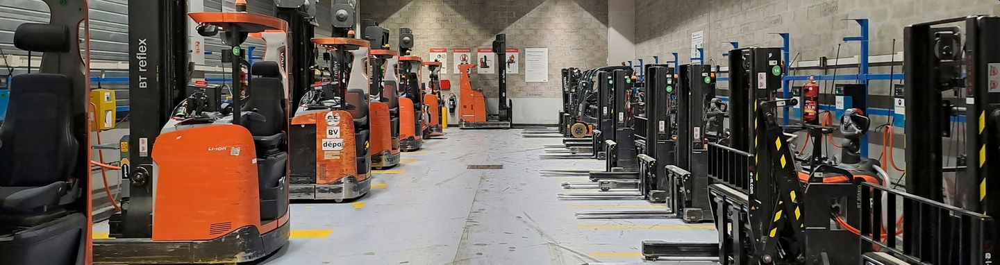

Carrello fermo?
Un tecnico arriva in azienda con il furgone attrezzato.
- Messa in funzione entro 24 ore dalla chiamata
- Interventi in tutta Padova e provincia
- Toyota, BT, Cesab e tutte le altre marche
- Carrelli sostitutivi durante le riparazioni
- Scrivete: carrello fermo


Foto indicativa: retrattili BT in ricarica nel magazzino di un'azienda.
Tutte le marche e i modelli
I tecnici dedicati agli interventi esterni sono specializzati su tutte le marche e i modelli, in particolare Toyota, BT e Cesab.
- Riparazione carrelliDi marche primarie e di tutte le altre
- BatterieRiparazione e manutenzione
- CaricabatterieAssistenza autorizzata per le riparazioni
- Impianti elettroniciTrasformazioni e riparazioni
- Anelli gommatiVendita e montaggio
- PreventiviPer telefono o per email
In caso di riparazione o revisione garantiamo la continuità del vostro ciclo produttivo, con carrelli sostitutivi e un intervento rapido e risolutivo. 049 8792361
Qualsiasi ricambio, anche uscito di produzione
Originali Toyota, BT e Cesab e di tutte le altre marche, anche prodotti all'estero. Kit di aggiornamento e materiali di consumo: batterie, gomme, olio.
Il magazzino ricambi è in via Canada 12, Padova, e si occupa anche dello smaltimento dei materiali esausti e dei ricambi sostituiti.
Manutenzione programmata e controlli di sicurezza
- Contratti di manutenzione programmata per il vostro parco carrelli.
- Le verifiche si annotano su un registro e si conservano per tre anni.D.Lgs. 81/2008, articolo 71
- Funi e catene si controllano ogni tre mesi; la buona prassi è il tagliando annuale.
Consulenti, più che riparatori
Unicar è l'officina a cui Cami2 affida l'assistenza tecnica dei carrelli: Cami2 li vende e li noleggia, noi li ripariamo e li manteniamo. Siamo nella stessa sede, in via Canada a Padova.
Lavoriamo per aziende di tutti i settori merceologici. Per ogni nuova unità presa in carico facciamo un esame tecnico approfondito, definiamo il piano d'intervento e concordiamo con voi il metodo.
Volete comprare o noleggiare un carrello? Cami2, via Canada 16, è la porta accanto.
cami2.itAnche nei casi più ostici.